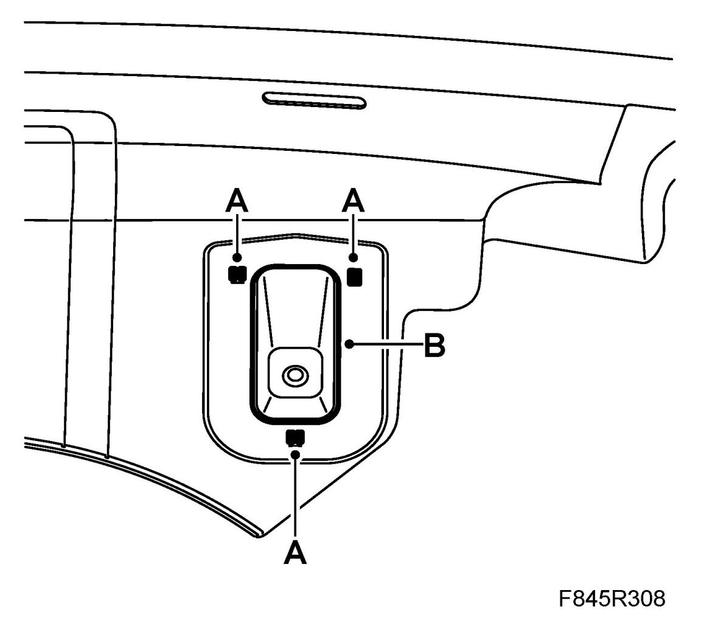
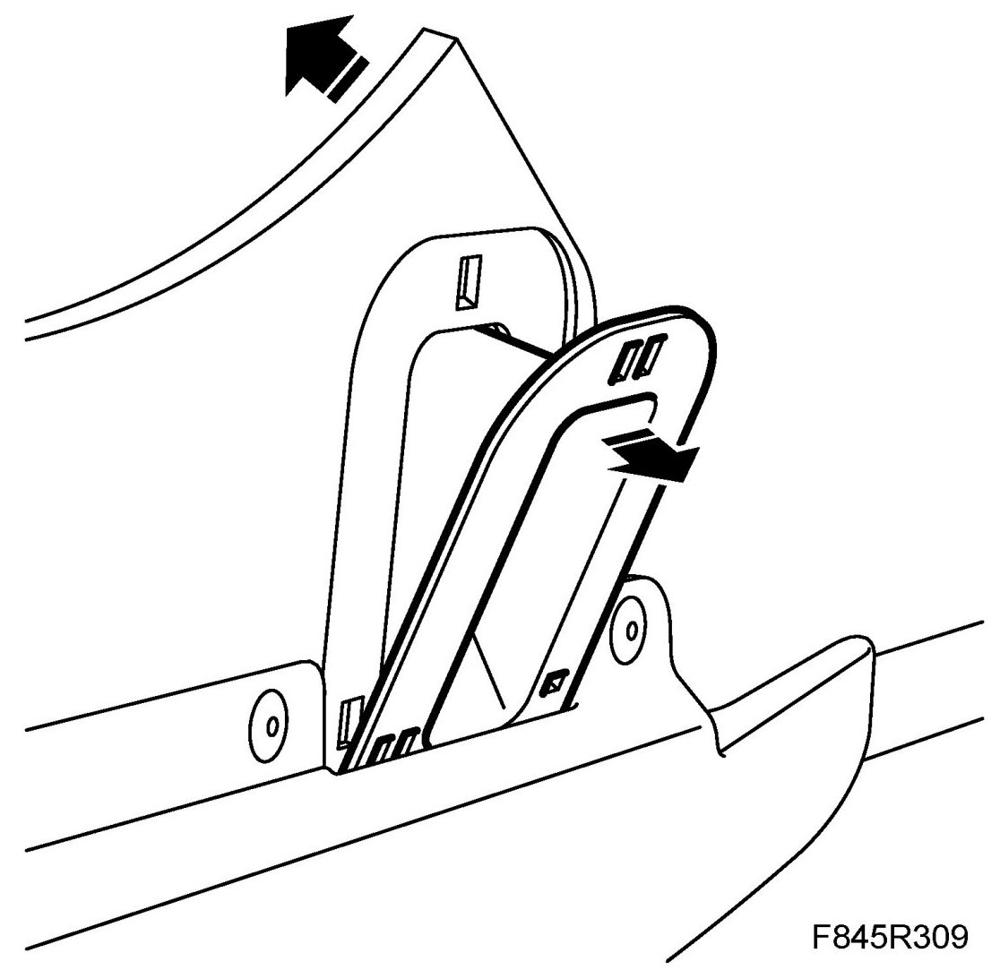
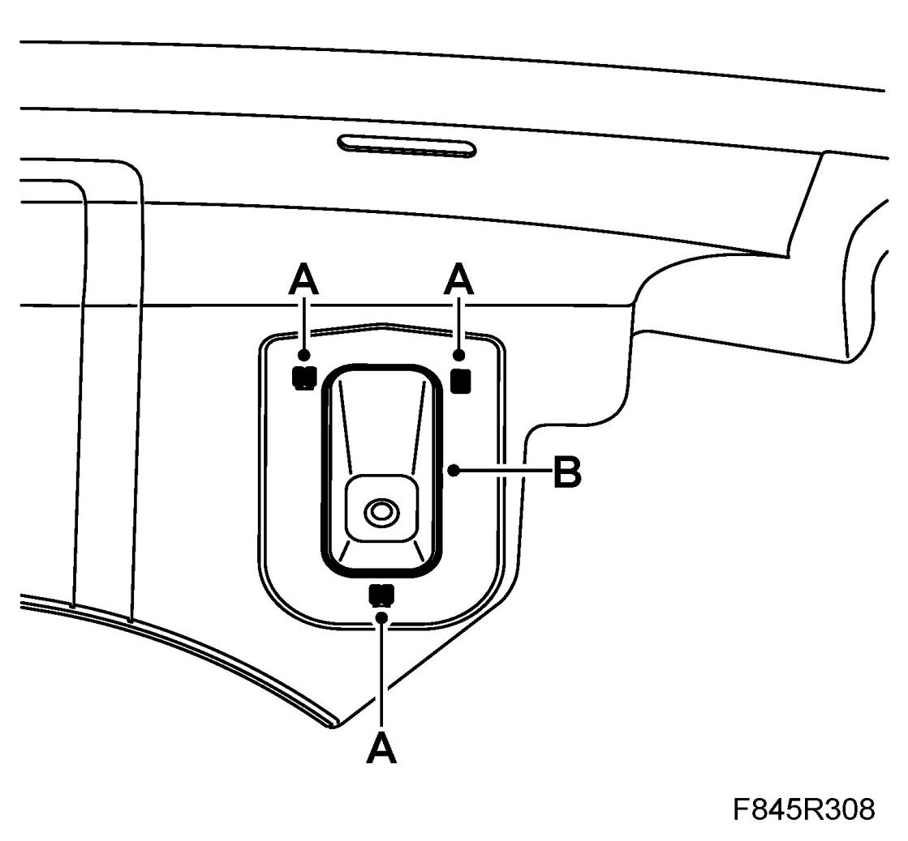

Rear Bumper: Service and Repair
Holder Under Rear Bumper
To remove
1. Remove the holder.
- Press the locking catches (A) together in order to release the holder (B) from the bumper.

- Carefully bend the bumper shell so that the holder can be removed.

To fit
1. Fit the holder.
- Carefully bend the bumper shell so that the holder can be fitted in its position.
- Press in the holder (B) so that the locking catches (A) engage.
